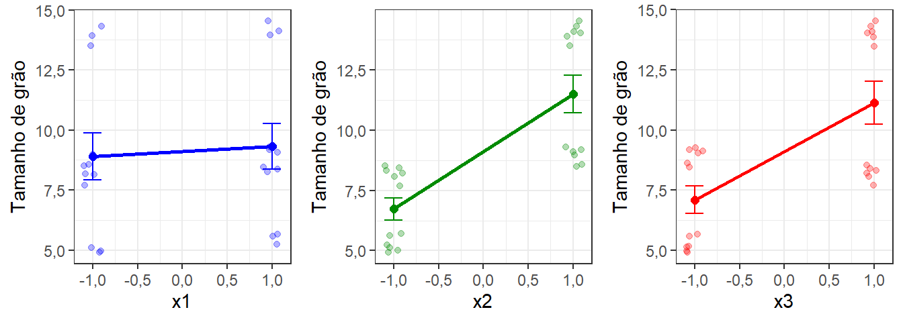
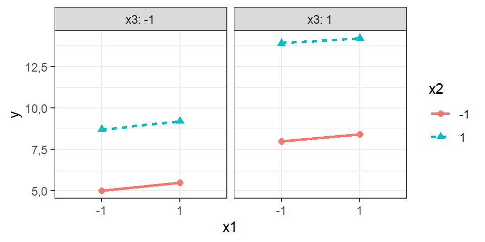
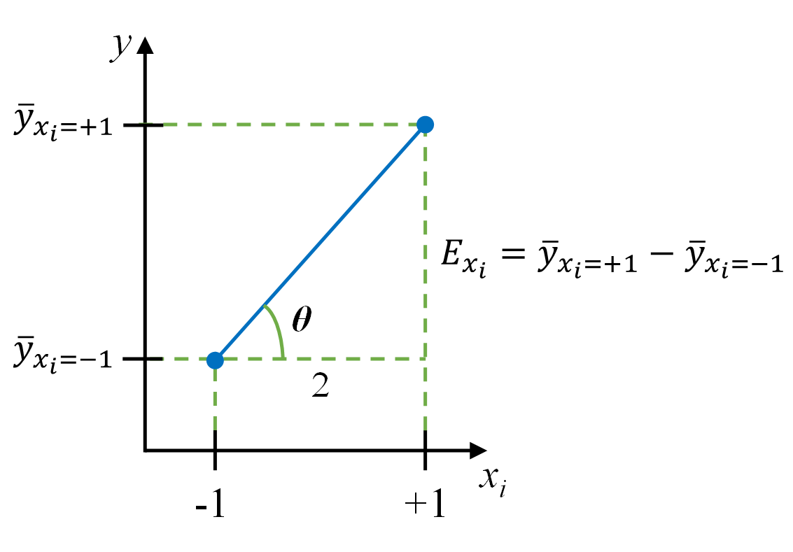
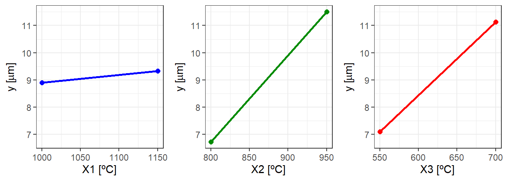

| ordem | x1 | x2 | x3 |
|---|---|---|---|
| 1 | -1 | -1 | -1 |
| 2 | 1 | -1 | -1 |
| 3 | -1 | 1 | -1 |
| 4 | 1 | 1 | -1 |
| 5 | -1 | -1 | 1 |
| 6 | 1 | -1 | 1 |
| 7 | -1 | 1 | 1 |
| 8 | 1 | 1 | 1 |
5 Fatorial de dois níveis replicado
5.1 Introdução
Os planejamentos fatoriais são utilizados quando deseja-se obter informações dos efeitos de dois ou mais fatores de interesse de forma simultânea, bem como estudar o efeito da interação entre dois ou mais fatores na resposta avaliada. O planejamento fatorial \(2^k\) permite a experimentação sequencial e econômica utilizando o fatorial fracionado \(2^{k-p}\) e o fatorial não replicado, os quais serão elucidados no capítulo posterior. É possível utilizar esquemas de confundimento e blocagem com a finalidade de diluir possíveis fontes de variação de ruído no planejamento, sem inflar o erro experimental. Por fim, o planejamento fatorial integra estratégias de experimentação sequencial para busca de região de curvatura e obtenção de modelos quadráticos a partir do planejamento composto central, o qual será elucidado no capítulo de metodologia de superfície de resposta.
Pretende-se inicialmente abordar o planejamento fatorial de dois níveis, o conhecido fatorial \(2^k\) replicado.
Neste capítulo são utilizados os pacotes FrF2, pid, vdg e ggpplot2, além das funções básicas do R. Recomenda-se a instalação destes utilizando o comando install.packages("<nome_pacote>"). A instalação é realizada uma única vez, porém o pacote deve ser carregado via library(<nome_pacote>) sempre que deseja-se usar suas funções.
5.2 Fatorial \(2^k\) replicado
O planejamento fatorial \(2^k\) consiste em um projeto experimental onde todos os \(k\) fatores de interesse apresentam dois níveis. Este planejamento permite a avaliação de fatores quantitativos ou qualitativos codificando os dois níveis dos fatores em -1 e +1. O número total de experimentos em um planejamento fatorial \(2^k\) é \(N = n2^{k}\), onde \(n\) é o número de replicações do planejamento. Um planejamento fatorial \(2^k\) considera todas as \(2^k\) combinações dos níveis dos três fatores de interesse \(x_1, x_2,..., x_k\). A finalidade de testar todas as combinações dos níveis dos fatores é de averiguar o efeito das interações entre os fatores, isto é, de estimar o efeito da mudança de dois ou mais fatores de forma concomitante.
A Tabela 5.1 apresenta um planejamento fatorial \(2^3\) com \(N = 8\) experimentos. O planejamento fatorial \(2^k\) é comumente codificado com níveis \({-1,+1}\). A codificação evita efeitos de escala e unidades de medida na inferência dos efeitos testados. A ordem padrão dos ensaios garante que todas as \(2^3\) combinações dos dois níveis dos \(k = 3\) fatores sejam testadas. Para o fator \(x_1\) muda-se de nível a cada \(2^0 = 1\) linha. Para o fator \(x_2\) muda-se de nível a cada cada \(2^1 = 2\) linhas. Para o fator \(x_k\) muda-se de nível a cada \(2^{k−1}\) linhas. E assim sucessivamente, caso o planejamento apresente mais fatores. Um fatorial balanceado deve ter o mesmo número de replicações, \(n\), em cada uma das \(2^k\) combinações dos níveis dos fatores.
A Figura 5.1 ilustra os planejamentos fatorial \(2^2\) e fatorial \(2^3\). Pode-se observar a correspondência da ilustração do fatorial \(2^3\), Figura 5.1(b), com o planejamento apresentado na Tabela 5.1, de forma que a identificação nos vértices do cubo corresponde com a coluna ordem do planejamento. Observa-se que a distância entre os níveis codificados é igual a 2.
Ao se utilizar um planejamento fatorial \(2^k\) é possível estimar:
\(k\) efeitos principais;
\({k \choose 2}\) interações de segunda ordem;
\({k \choose 3}\) interações de terceira ordem;
\(\vdots\)
\({k \choose (k - 1)}\) interações de terceira ordem;
1 interação de ordem \(k\).
Um conceito importante para regressão é a matriz do planejamento, ou design matrix, \(\mathbf{X}\), de ordem \(N \times r\). A matriz do planejamento contém uma coluna para cada termo a ser estimado no modelo de regressão, totalizando \(r\) colunas. A matriz \(\mathbf{X}\), à seguir, é a matriz do planejamento fatorial \(2^3\). A primeira coluna é unitária, estando relacionada à constante. As três colunas seguintes estão relacionadas aos fatores \(x_1\), \(x_2\) e \(x_3\), respectivamente, consistindo no próprio planejamento fatorial \(2^3\). Posteriormente, tem-se as três colunas das interações de segunda ordem \(x_{1}x_{2}\), \(x_{1}x_{3}\) e \(x_{2}x_{3}\), sendo cada termo formado pelo produto aos pares dos termos das colunas relacionadas. Finalmente, a última coluna relaciona-se à interação de terceira ordem \(x_{1}x_{2}x_{3}\). Portanto, a interação, consiste matematicamente no produto das variáveis que interagem. Caso o analista não deseje um modelo completo, o número de colunas \(r\) da matriz \(\mathbf{X}\) pode ser menor. Entretanto, deve-se manter a hierarquia do modelo, de forma que todos os efeitos individuais e interações de menor ordem envolvidos nas interações consideradas estejam presentes. A matriz \(\mathbf{X}\) é ortogonal, de forma que para cada fator (cada coluna), cada nível é repetido o mesmo número de vezes \(N/2\), ou de forma análoga, para qualquer coluna \(i\), a soma de todos as linhas é nula, isto é, \(\sum_{u=1}^{N}x_{iu} = 0\) e, também, a soma dos produtos dos termos de duas colunas quaisquer é nula, \(\sum_{u=1}^{N}x_{iu}x_{ju}\), tomando duas colunas \(i, j\), com \(i \ne j\), e considerando \(u = 1, ..., N\) linhas. A ortogonalidade implica na independência na estimativa dos efeitos.
\[\mathbf{X} = \begin{bmatrix} 1 & -1 & -1 & -1 & +1 & +1 & +1 & -1\\ 1 & +1 & -1 & -1 & -1 & -1 & +1 & +1\\ 1 & -1 & +1 & -1 & -1 & +1 & -1 & +1\\ 1 & +1 & +1 & -1 & +1 & -1 & -1 & -1\\ 1 & -1 & -1 & +1 & +1 & -1 & -1 & +1\\ 1 & +1 & -1 & +1 & -1 & +1 & -1 & -1\\ 1 & -1 & +1 & +1 & -1 & -1 & +1 & -1\\ 1 & +1 & +1 & +1 & +1 & +1 & +1 & +1\\ \end{bmatrix}\]
O fatorial \(2^k\) permite o cálculo dos efeitos de forma intuitiva, além de garantir a possibilidade de estimativa de um modelo de regressão linear com interação e de testar significância dos coeficientes de regressão. É possível também utilizar a ANOVA para trabalhar a significância dos efeitos, considerando os contrastes das somas nos dois níveis. Para facilitar o entendimento, seja o exemplo Exemplo 5.1.
Exemplo 5.1 Um planejamento fatorial \(2^k\) foi utilizado para estudar a conformação a quente de um aço microligado com nióbio. Foram estudados três parâmetros do processo, a saber: \(x_1\): temperatura de desbaste; \(x_2\): temperatura de acabamento; e \(x_3\): temperatura de enrolamento em \([^\circ C]\). A resposta estudada, \(y\), foi o tamanho de grão. A Tabela 5.2 expõe os níveis do planejamento. Três replicações foram realizadas, totalizando \(N =3\times2^{3} = 24\) testes, sendo o planejamento e os 24 resultados dos experimentos expostos na Tabela 5.3.
| Fatores | -1 | 1 |
| X1 | 1000 | 1150 |
| X2 | 800 | 950 |
| X3 | 550 | 700 |
| ordem | x1 | x2 | x3 | Grão \([\mu m]\) | Grão \([\mu m]\) | Grão \([\mu m]\) |
|---|---|---|---|---|---|---|
| 1 | -1 | -1 | -1 | 5,1 | 5,0 | 4,9 |
| 2 | 1 | -1 | -1 | 5,6 | 5,7 | 5,2 |
| 3 | -1 | 1 | -1 | 8,6 | 8,5 | 9,0 |
| 4 | 1 | 1 | -1 | 9,1 | 9,2 | 9,3 |
| 5 | -1 | -1 | 1 | 7,7 | 8,2 | 8,1 |
| 6 | 1 | -1 | 1 | 8,4 | 8,3 | 8,5 |
| 7 | -1 | 1 | 1 | 13,5 | 13,9 | 14,3 |
| 8 | 1 | 1 | 1 | 14,0 | 14,1 | 14,5 |
Inicialmente serão demonstrados os códigos para obtenção do planejamento e análise dos resultados utilizando comandos simples em R, de forma a explicar junto à teoria como realizar as estimativas dos efeitos, coeficientes e testes relacionados. Posteriormente, serão utilizados pacotes mais estruturados para obtenção do planejamento e análise dos resultados de forma direta. Para gerar este planejamento no R, pode-se utilizar o código à seguir.
# definindo os níveis
levels <- c(-1, +1)
# criando o planejamento
# o comando expand.grid faz todas as combinações
# dos níveis dos vetores colocados como argumentos
planej <- expand.grid(levels,levels,levels)
# replicando o planejamento três vezes
planej <- rbind(planej,planej,planej)
# adicionando coluna de ordem padrão e ordem aleatória
planej <- cbind(c(1:24), sample(1:24,24,replace = F), planej)
# definindo nomes para as colunas
colnames(planej) <- c("ordem", "random", "x1","x2","x3")
# Definindo resposta
grao <- c(5.1, 5.6, 8.6, 9.1, 7.7, 8.4, 13.5, 14,
5, 5.7, 8.5, 9.2, 8.2, 8.3, 13.9, 14.1,
4.9, 5.2, 9, 9.3, 8.1, 8.5, 14.3, 14.5)
# atribuindo resposta à coluna y do planejamento
planej$y <- graoA coluna de ordem aleatória (random) foi gerada para propor uma ordem de condução dos ensaios. A aleatorização da ordem e da seleção dos materiais nos experimentos é importante para diluir o erro experimental devido a variáveis incontroláveis de forma aleatória em todas as condições experimentais. Estas variáveis incontroláveis, ditas de ruído, podem ter origem em condições ambientais ou de fontes de variação intrínsecas do próprio aparato experimental e materiais usados.
Por exemplo, suponha que o analista não tem condições de fixar a temperatura ambiente durante a condução de \(N\) experimentos. Se estes ensaios são conduzidos na ordem padrão, caso a temperatura aumente de forma linear no horizonte de tempo de condução dos ensaios, pode ser que o efeito do último fator, \(x_k\), esteja confundido com o efeito da temperatura, visto que a ordem padrão do último fator no fatorial \(2^k\) implica na condução dos \(N/2\) primeiros ensaios no nível baixo, \(x_k=-1\), e a outra metade no nível alto, \(x_k=+1\). A aleatorização auxiliará na diluição do efeito do fator incontrolável, a temperatura ambiente, de forma aleatória em todas as parcelas experimentais.
De forma geral, o efeito consiste na diferença entre médias. No fatorial \(2^k\), para cada fator de interesse, o efeito é a diferença entre médias da resposta nos níveis alto e baixo. Seja \(E_{x_i}\) efeito do fator \(x_i\), \(i = 1, ..., k\), calculado conforme Equação 5.1.
\[ E_{x_{i}} = \frac{\sum_{x_{i}=+1}y - \sum_{x_{i}=-1}y}{N/2} \tag{5.1}\]
Para calcular os efeitos pode-se considerar a matrix \(\mathbf{X}\), de forma que cada efeito seja a soma do produto da respectiva coluna da \(\mathbf{X}^T\mathbf{y}\) pelo vetor linha da resposta, \(\mathbf{y}\), dividido por \(N/2\), isto é, \(\mathbf{x}_i^T\mathbf{y}\), onde \(\mathbf{x}_i\), \(i = 1, ..., r\) é a i-ésima coluna da matriz \(\mathbf{X}\). Neste caso geral \(r = 2^k\). Porém, há casos onde o analista não deseja estimar todos os efeitos, de forma que \(r<2^k\). O sinal do efeito indica se um acréscimo na variável independente (fator de controle) aumenta - efeito positivo - ou diminui - efeito negativo - a resposta de interesse.
# construindo a matrix X do planejamento do exemplo
X <- with(planej, cbind(I = 1, x1, x2, x3, x1x2 = x1*x2, x1x3= x1*x3, x2x3 = x2*x3, x1x2x3 = x1*x2*x3))
# Calculando os efeitos
efeitos <- crossprod(X, grao)/(3*2^3/2)
colnames(efeitos) <- "Efeitos"
efeitos Efeitos
I 18,225
x1 0,425
x2 4,775
x3 4,025
x1x2 -0,025
x1x3 -0,075
x2x3 1,075
x1x2x3 -0,025Graficamente pode-se observar os efeitos lineares de forma simples, conforme ilustra a Figura 5.2. Todos os efeitos lineares foram positivos, de forma que o aumento nos níveis de \(x_1\), \(x_2\), e \(x_3\) acarreta um aumento no tamanho de grão. Observando o módulo dos efeitos calculados anteriormente e as inclinações das retas, os efeitos principais em ordem decrescente são \(x_2\), \(x_3\), e \(x_1\).

É importante plotar as interações de segunda ordem graficamente. A Figura 7.8 apresenta os gráficos de interação de segunda ordem entre \(x_1\), \(x_2\) e \(x_3\). Pode-se confirmar que a maior interação foi \(x_2x_3\). Quando \(x_3 = -1\) o efeito de \(x_2\) é menor na resposta \(y\) em relação a \(x_3 = +1\). A interação consiste na mudança provocada no efeito de um fator dada a mudança simultânea no nível de outro fator. Todos os efeitos devem ser testados para averiguar a significância estatística. Os gráficos são um auxílio para interpretação prática dos mesmos. Pode-se observar que no gráfico da interação \(x_2x_3\) há maior diferença na inclinação entre as duas retas. O efeito de \(x_2\) na resposta tamanho de grão é maior quando \(x_3 = +1\). Pode-se constatar também que as médias relacionadas às quatro combinações desta interação estão mais próximas dos aglomerados formados pelas observações. Possivelmente ela terá maior efeito entre as interações do estudo.
Por fim, um gráfico de interação de terceira ordem pode ser pensado considerando uma das variáveis em painéis. A Figura 5.4 expõe este gráfico.

Utilizando um planejamento fatorial \(2^k\) é possível estimar um modelo de regressão conforme o exposto na Equação 5.2. De forma genérica este modelo pode ser representado conforme Equação 5.3. Este modelo geral está truncado nas interações de segunda ordem, \(\beta_{ij}\), porém poderiam constar nele interações de até \(k\)-ésima ordem. Um modelo de regressão fatorial deve ser hierárquico de forma que os todos os termos principais (efeitos lineares) contidos nas interações de segunda ordem que constam no modelo devem estar presentes no modelo. De forma análoga, caso interações de ordem maior constassem no modelo, interações menores contidas nestas também deveriam ser consideradas.
\[ \hat{y} = \beta_0 + \beta_1x_1 + \beta_2x_2 + \beta_3x_3 + \beta_{12}x_1x_2 + \beta_{13}x_1x_3 + \beta_{23}x_2x_3 \tag{5.2}\]
\[ \hat{y} = \beta_0 + \displaystyle\sum_{i=1}^{k}\beta_ix_i+ \displaystyle\sum_{i\ne}\displaystyle\sum_{j}\beta_{ij}x_ix_j \tag{5.3}\]
A partir dos efeitos, é possível obter coeficientes de regressão de forma simplória. A constante \(\beta_0\) consiste na média de todos os \(N\) experimentos. A Figura 5.5 ilustra como o coeficiente linear deve ser interpretado para o fator \(x_i\), \(i = 1, ..., k\). O coeficiente linear, \(\beta_i\), consiste na inclinação da reta, conforme expõe a Equação 5.4, e mede a mudança na resposta com o acréscimo de uma unidade codificada do fator relacionado. Estes coeficientes de regressão devem ser usados de forma codificada \(x_i \in [-1,+1]\). Como cada interação pode ser representada em uma coluna como o produto dos fatores que interagem, o cálculo dos coeficientes das interações é feito de forma análoga. Tomando uma interação de segunda ordem entre os fatores \(x_i\) e \(x_j\), caso o coeficiente, \(\beta_{ij}\), seja positivo, se os fatores que interagem são colocadas ambos no mesmo nível codificado, \(x_ix_j = (-1)(-1)\) ou \(x_ix_j = (+1)(+1)\), implica em um incremento na resposta igual ao valor do coeficiente. Ainda considerando o coeficiente positivo, se os fatores são colocadas em níveis codificados distintos, \(x_ix_j = (-1)(+1)\) ou \(x_ix_j = (+1)(-1)\), ocorre um decréscimo na resposta igual ao valor do coeficiente.

\[ \beta_i = \tan \theta = \frac{E_{x_{i}}}{2} \text{, } i = 1, ..., k \tag{5.4}\]
Considerando os efeitos obtidos anteriormente no R, pode-se obter os coeficientes de regressão com a sintaxe à seguir.
# Cálculo dos coeficientes
Coef <- efeitos/2
colnames(Coef) <- "Coeficientes"
Coef Coeficientes
I 9,1125
x1 0,2125
x2 2,3875
x3 2,0125
x1x2 -0,0125
x1x3 -0,0375
x2x3 0,5375
x1x2x3 -0,0125O modelo de regressão apresentado na Equação 5.4 é uma aproximação para a resposta de interesse, \(\hat{y}\), servindo para prever a média da resposta considerando os limites (níveis) dos fatores testados experimentalmente. Mesmo se este modelo fosse completo, incluindo todas as interações possíveis até a interação de ordem \(k\), \(\beta_{ij...k}\) no caso do fatorial replicado, com \(N = n2^k\) experimentos, há possibilidade de estimativa do erro experimental, considerando as \(n\) replicações experimentais de cada combinação. O erro experimental é decorrente de fatores incontroláveis presentes durante os ensaios e devido a imperfeições físicas do aparato experimental, erro humano e variações devido a fatores ambientes ou de ruído desconhecidos ou não controlados durante os ensaios. Logo, se o modelo \(\hat{y}\) apresenta erro, cada observação \(y\) pode ser descrita considerando o estimado pelo modelo de regressão adicionado do termo geral de erro ou resíduo, \(y = \hat y + \varepsilon\), conforme Equação 5.5.
\[ y = \beta_0 + \displaystyle\sum_{j=1}^{k}\beta_ix_i+ \displaystyle\sum_{i\ne}\displaystyle\sum_{j}\beta_{ij}x_ix_j + \varepsilon \tag{5.5}\]
Os coeficientes de regressão podem ser estimados utilizando o método dos mínimos quadrados. Seja o modelo de regressão fatorial \(2^k\) somado do termo de erro apresentado em forma matricial conforme Equação 5.6.
\[ \mathbf{y} = \mathbf{X}\boldsymbol{\beta} + \boldsymbol{\varepsilon} \tag{5.6}\]
No modelo da Equação 5.6 cada termo corresponde explicitamente a:
\[\mathbf{y}_{[N \times 1]} = \begin{bmatrix} y_1 \\ y_2 \\ \vdots \\ y_N \end{bmatrix}, \boldsymbol{\varepsilon}_{[N \times 1]} = \begin{bmatrix} \varepsilon_1 \\ \varepsilon_2 \\ \vdots \\ \varepsilon_N \end{bmatrix}, \boldsymbol{\beta}_{[r \times 1]} = \begin{bmatrix} \beta_0 \\ \beta_1 \\ \vdots \\ \beta_k \\ \beta_{12} \\ \vdots \\ \beta_{(k-1)k} \end{bmatrix}\]
\[\mathbf{X}_{[N \times r]} = \begin{bmatrix} 1 & x_{1(-)} & \cdots & x_{k(-)} & x_{1(-)}x_{2(-)} & \cdots & x_{k-1(-)}x_{k(-)}\\ 1 & x_{1(+)} & \cdots & x_{k(-)} & x_{1(+)}x_{2(-)} & \cdots & x_{k-1(-)}x_{k(-)}\\ \vdots & \vdots & \ddots & \vdots & \vdots & \ddots & \vdots \\ 1 & x_{1(+)} & \cdots & x_{k(+)} & x_{1(+)}x_{2(+)} & \cdots & x_{k-1(+)}x_{k(+)}\\ \end{bmatrix}\]
Pode-se obter o vetor de valores previstos com o modelo \(\hat{\mathbf{y}}= \mathbf{X}\boldsymbol{\beta}\). O objetivo do método de mínimos quadrados é escolher os coeficientes de regressão \(\boldsymbol{\beta}\) que minimizem a soma dos quadrados dos resíduos, \(\sum_{u=1}^{N}\varepsilon_u^2 = \boldsymbol{\varepsilon}^T\boldsymbol{\varepsilon}\). Uma vez que os resíduos tem média nula, é necessário trabalhar com a soma dos quadrados para viabilizar a minimização do erro acumulado. Tomando a Equação 5.6, o erro pode ser calculado como \(\boldsymbol{\varepsilon} = \mathbf{y} - \mathbf{X}\boldsymbol{\beta}\). Tomando o quadrado dos erros, tem-se:
\[ \boldsymbol{\varepsilon}^T\boldsymbol{\varepsilon} = (\mathbf{y} - \mathbf{X}\boldsymbol{\beta})^T(\mathbf{y} - \mathbf{X}\boldsymbol{\beta}) \] \[ \boldsymbol{\varepsilon}^T\boldsymbol{\varepsilon} = \mathbf{y}^T\mathbf{y} - \boldsymbol{\beta}^T\mathbf{X}^T\mathbf{y} - \mathbf{y}^T\mathbf{X}\boldsymbol{\beta} + \boldsymbol{\beta}^T\mathbf{X}^T\mathbf{X}\boldsymbol{\beta} \] \[ \boldsymbol{\varepsilon}^T\boldsymbol{\varepsilon} = \mathbf{y}^T\mathbf{y} - 2\boldsymbol{\beta}^T\mathbf{X}^T\mathbf{y} + \boldsymbol{\beta}^T\mathbf{X}^T\mathbf{X}\boldsymbol{\beta} \]
Minimizando a soma dos quadrados dos resíduos em relação a \(\beta\):
\[ \frac{\partial\boldsymbol{\varepsilon}^T\boldsymbol{\varepsilon}}{\partial\boldsymbol{\beta}} = - 2\mathbf{X}^T\mathbf{y} + 2\mathbf{X}^T\mathbf{X}\hat{\boldsymbol{\beta}} = 0 \]
Resolvendo para \(\hat{\boldsymbol{\beta}}\), tem-se os estimadores de mínimos quadrados de \(\boldsymbol{\beta}\), conforme Equação 5.7.
\[ \hat{\boldsymbol{\beta}} = (\mathbf{X}^T\mathbf{X})^{-1}(\mathbf{X}^T\mathbf{y}) \tag{5.7}\]
A ortogonalidade da matrix \(\mathbf{X}\) implica na estimativa dos coeficientes de regressão de forma independente, isto é, todos os coeficientes são não correlacionados, com mínima variância. Os coeficientes de regressão podem ser obtidos no R com o código à seguir.
# matrix X
X <- with(planej, cbind(I = 1, x1, x2, x3,
x1x2 = x1*x2, x1x3= x1*x3, x2x3 = x2*x3,
x1x2x3 = x1*x2*x3))
# Coeficientes de mínimos quadrados
beta <- (solve(t(X)%*%X))%*%(t(X)%*%grao)Os resíduos podem ser obtidos no R conforme segue.
# resíduos
resi <- grao - X%*%betaÉ possível calcular a soma dos quadrados dos erros com a finalidade de posteriormente estimar a variância experimental. Uma vez que \(\boldsymbol{\varepsilon} = \mathbf{y} - \mathbf{X}\boldsymbol{\beta} = \mathbf{y} - \hat{\mathbf{y}}\), tem-se a soma dos quadrados dos erros, conforme segue:
\[ SS_E = \displaystyle\sum_{u=1}^{N}(y_u-\hat{y}_u) = (\mathbf{y} - \hat{\mathbf{y}})^T(\mathbf{y} - \hat{\mathbf{y}}) \]
Tomando um planejamento com \(N\) experimentos para estimar um modelo com \(r\) termos, o número de graus de liberdade do erro experimental é \(DF_E= N-r\). Logo, a média dos quadrados dos erros, que consiste na estimativa da variância experimental, \(\hat{\sigma}^2 = MS_E\), pode ser obtida conforme Equação 5.8.
\[ MS_E = \frac{\displaystyle\sum_{u=1}^{N}(y_u-\hat{y}_u)^2}{N-r} \tag{5.8}\]
No R pode-se obter a variância experimental conforme segue.
# Número de ensaios
N <- dim(X)[1]
# Número de termos
r <- dim(X)[2]
# variância experimental - MSE
mse <- sum(resi^2)/(N-r)
mse[1] 0,05875É possível testar a significância dos coeficientes de regressão utilizando a distribuição \(t\). Uma vez que o coeficiente de regressão linear consiste na mudança obtida na resposta com acréscimo de uma unidade, \(\beta_j\) consiste no numerador da estatística do teste. Já o denominador da estatística do teste consiste no desvio-padrão da média, isto é \(s/\sqrt{N}=\sqrt{MS_E/(n2^k)}\), seguindo o teorema central do limite. Portanto, a estatística do teste \(t\) para os coeficientes de regressão é obtida pela Equação 5.9. A hipótese nula do teste é \(H_0: \beta_j = 0\), enquanto a hipótese alternativa é \(H_1: \beta_j \ne 0\). Deste modo, se \(|t_{\beta_j}| > |t_{(\alpha/2,N-r)}|\), rejeita-se \(H_0\).
\[ t_{\beta_j}= \frac{\beta_j}{\sqrt{MS_E/(n2^k)}} \tag{5.9}\]
Portanto, pode-se testar a significância dos coeficientes de regressão no R conforme segue. A condição \(|t_{\beta_j}| > |t_{(\alpha/2,N-r)}|\) foi satisfeita para a constante \(\beta_0\), para os coeficientes relacionados a \(x_1\), \(x_2\) e \(x_3\), ou seja, \(\beta_1\), \(\beta_2\) e \(\beta_3\) e para o coeficiente da interação entre \(x_2x_3\), \(\beta_{23}\).
# Desvio-padrão da média (erro padrão) dos coeficientes
se_coef <- sqrt(mse/N)
# t calculado para os coeficientes
t_beta <- beta/(se_coef)
colnames(t_beta) <- "t0"
t_beta t0
I 184,1786251
x1 4,2949748
x2 48,2553051
x3 40,6759378
x1x2 -0,2526456
x1x3 -0,7579367
x2x3 10,8637598
x1x2x3 -0,2526456# t tabelado
t_tab <- qt(p = 0.025, df = N-r)
t_tab[1] -2,119905# p-valor
pvalue_t <- 2*pt(q = abs(t_beta), df = N-r, lower.tail = F)
colnames(pvalue_t) <- "p-value"
pvalue_t p-value
I 4,793840e-28
x1 5,564585e-04
x2 9,265472e-19
x3 1,396616e-17
x1x2 8,037592e-01
x1x3 4,595076e-01
x2x3 8,571502e-09
x1x2x3 8,037592e-01Associado ao teste \(t\) para os coeficientes de regressão, pode-se construir um intervalo de confiança para os coeficientes de regressão conforme a Equação 5.10, onde \(\gamma = 1 - \alpha\) é o nível de confiança adotado.
\[ IC_{\beta_j,\gamma}= \beta_j \pm t_{\gamma}\sqrt{MS_E/(n2^k)} \tag{5.10}\]
Além de testar a significância dos coeficientes de regressão utilizando o teste \(t\), no fatorial \(2^k\) é comum utilizar a análise de variância para testar a significância dos efeitos. A ANOVA testa a diferença entre médias considerando o particionamento da soma dos quadrados. No fatorial com dois níveis estas quantidades podem ser calculadas considerando o contraste entre as somas dos dois níveis considerados. Para o i-ésimo efeito principal a soma dos quadrados, \(SS_{x_i}\), pode ser calculada conforme a Equação 5.11. De forma análoga, a soma dos quadrados para qualquer interação de segunda ordem, \(x_ix_j\), \(i \ne j\), pode ser calculada conforme a Equação 5.12, e de forma análoga para as interações de ordem maior. Para o i-ésimo efeito principal, o número de graus de liberdade, no caso do fatorial de dois níveis, é sempre unitário, \(DF_{x_i} = 2-1\). O mesmo reside para os graus de liberdade das interações entre os fatores \(x_ix_j\), \(i \ne j\), visto que a interação consiste no produto, ou seja, \(DF_{x_ix_j} = DF_{x_i}DF_{x_j} = 1\times1=1\). Logo, a média dos quadrados para os efeitos em avaliação no fatorial \(2^k\) é igual à soma dos quadrados, \(MS_{x_i} = SS_{x_i}/1\).
\[ SS_{x_i} = \frac{\left(\displaystyle\sum_{x_{i}=+1}y - \displaystyle\sum_{x_{i}=-1}y\right)^2}{n2^k} \tag{5.11}\] \[ SS_{x_ix_j} = \frac{\left(\displaystyle\sum_{x_{i}x_{j}=+1}y - \displaystyle\sum_{x_{i}x_{j}=-1}y\right)^2}{n2^k} \tag{5.12}\]
Para testar a significância dos efeitos no fatorial \(2^k\) via ANOVA deve-se calcular a estatística \(F_{0(x_i)}\), como a razão entre a média dos quadrados do efeito de interesse e a média dos quadrados dos erros, \(F_{0(x_i)} = MS_{x_i}/MS_E\). Se \(F_0 > F_{(\alpha, 1, N-r)}\), rejeita-se \(H_0\). O valor na distribuição \(F\) com um grau de liberdade unitário no numerador e \(\nu\) graus de liberdade no numerador é igual ao quadrado do valor \(t\) com \(\nu\) graus de liberdade, estando ambas estatísticas associadas à mesma probabilidade, isto é, \(F_{(\alpha,1,\nu)}=t_{(\alpha,\nu)}^2\). Deste modo, não há diferença na conclusão em relação à significância dos efeitos obtida com a ANOVA e com o teste \(t\) para os coeficientes de regressão. Entretanto, pelo sinal da estatística \(t\) já é possível afirmar se o efeito é positivo ou negativo, enquanto a estatística \(F\) é sempre positiva, visto que lida com a razão entre somas dos quadrados e tem domínio nos reais positivos, \(F \in [0,+\infty)\). Em ambos os testes o p-valor será o mesmo e, logicamente, se \(p-valor < \alpha\), rejeita-se \(H_0\).
Pode-se utilizar o código seguir para obter os resultados da ANOVA.
# Soma dos quadrados dos efeitos
SSx <- crossprod(X[,-1], grao)^2/(3*2^3)
# Média dos quadrados dos efeitos
MSx <- SSx/1
colnames(MSx) <- "Média dos quadrados"
MSx Média dos quadrados
x1 1,08375
x2 136,80375
x3 97,20375
x1x2 0,00375
x1x3 0,03375
x2x3 6,93375
x1x2x3 0,00375# Valor F calculado
F0_x <- MSx/mse
colnames(F0_x) <- "F0"
F0_x F0
x1 1,844681e+01
x2 2,328574e+03
x3 1,654532e+03
x1x2 6,382979e-02
x1x3 5,744681e-01
x2x3 1,180213e+02
x1x2x3 6,382979e-02# F tabelado
Ftab <- qf(p = 0.05, df1 = 1, df2 = N-r, lower.tail = F)
Ftab[1] 4,493998# P-valor
pvalue_F <- pf(q = F0_x, df1 = 1, df2 = N-r, lower.tail = F)
colnames(pvalue_F) <- "p-valor"
pvalue_F p-valor
x1 5,564585e-04
x2 9,265472e-19
x3 1,396616e-17
x1x2 8,037592e-01
x1x3 4,595076e-01
x2x3 8,571502e-09
x1x2x3 8,037592e-01Para avaliar a performance do modelo obtido, pode-se calcular as estatísticas de ajuste. Os coeficientes de determinação no fatorial \(2^k\) podem ser obtidos de forma análoga ao realizado na ANOVA para um fator. No R, o cálculo pode ser realizado conforme segue. Apesar do alto ajuste, foi observado que há alguns efeitos que não foram estatisticamente significativos. Deste modo, pode-se optar por reduzir o modelos caso seja desejável melhorar o ajuste. Para isto, basta remover a coluna do efeito a ser removido da matriz \(\mathbf{X}\). Geralmente, ao se remover do modelo termos não significativos, diminui-se o erro experimental, \(\hat{\sigma}^2 = MS_E\), uma vez que se aumenta o número de graus de liberdade para estimativa deste. Consequentemente, aumenta-se \(R_{aj}^2\) e diminui-se \(R^2\), o que é positivo, visto que o primeiro é uma medida mais fiel para estimar a proporção da variabilidade dos dados explicada pelo modelo, por levar em conta os graus de liberdade. E quanto mais próximo o valor das duas métricas de ajuste, mais confiáveis estas são.
# coef de determinação simples
R2 <- sum(SSx)/sum(((grao)-mean(grao))^2)
R2[1] 0,9961318# coef de determinação ajustado
R2aj <- 1 - mse/var(grao)
R2aj[1] 0,9944394Os cálculos demonstrados para regressão, teste \(t\) para os coeficientes e ANOVA foram realizados com a finalidade de entender a modelagem e os testes passo a passo. Entretanto, o R possui pacotes e comandos estruturados que viabilizam um resultado organizado com menos trabalho.
Utilizando o pacote FrF2 pode-se criar e analisar planejamentos fatorias \(2^k\). Junto com este pacote podem ser utilizadas funções base do R como lm e aov para obter, respectivamente, o modelo de regressão, teste \(t\) e a ANOVA. O primeiro passo é carregar o pacote FrF2.
# carregando o pacote FrF2
library(FrF2)Pode-se criar o planejamento com o comando FrF2. Observe que o planejamento pode ser criado considerando os níveis decodificados dos fatores de interesse. É possível aleatorizar os ensaios com randomize = T. Entretanto, só é recomendado a aleatorização ao gerar o planejamento antes de ir para o laboratório. Para apresentar os resultados em um trabalho acadêmico, a ordem padrão facilita a visualização dos efeitos e compreensão dos resultados. Posteriormente à criação do planejamento, pode-se adicionar a resposta com o comando add.response.
# Criando o planejamento
plan <- FrF2(nruns = 8,
nfactors = 3,
factor.names=list(x1=c(1000,1150),
x2=c(800,950),
x3=c(550,700)),
replications = 3,
randomize = F)
#
plan <- add.response(plan, grao)
summary(plan)Call:
FrF2(nruns = 8, nfactors = 3, factor.names = list(x1 = c(1000,
1150), x2 = c(800, 950), x3 = c(550, 700)), replications = 3,
randomize = F)
Experimental design of type full factorial
8 runs
each run independently conducted 3 times
Factor settings:
x1 x2 x3
1 1000 800 550
2 1150 950 700
Responses:
[1] grao
The design itself:
run.no run.no.std.rp x1 x2 x3 Blocks grao
1 1 1.1 1000 800 550 .1 5,1
2 2 2.1 1150 800 550 .1 5,6
3 3 3.1 1000 950 550 .1 8,6
4 4 4.1 1150 950 550 .1 9,1
5 5 5.1 1000 800 700 .1 7,7
6 6 6.1 1150 800 700 .1 8,4
7 7 7.1 1000 950 700 .1 13,5
8 8 8.1 1150 950 700 .1 14,0
9 9 1.2 1000 800 550 .2 5,0
10 10 2.2 1150 800 550 .2 5,7
11 11 3.2 1000 950 550 .2 8,5
12 12 4.2 1150 950 550 .2 9,2
13 13 5.2 1000 800 700 .2 8,2
14 14 6.2 1150 800 700 .2 8,3
15 15 7.2 1000 950 700 .2 13,9
16 16 8.2 1150 950 700 .2 14,1
17 17 1.3 1000 800 550 .3 4,9
18 18 2.3 1150 800 550 .3 5,2
19 19 3.3 1000 950 550 .3 9,0
20 20 4.3 1150 950 550 .3 9,3
21 21 5.3 1000 800 700 .3 8,1
22 22 6.3 1150 800 700 .3 8,5
23 23 7.3 1000 950 700 .3 14,3
24 24 8.3 1150 950 700 .3 14,5
class=design, type= full factorial
NOTE: columns run.no and run.no.std.rp are annotation,
not part of the data frameUma forma mais simples de obter a matriz do planejamento é utilizando o comando model.matrix, conforme segue.
# matriz do planejamento
X <- model.matrix(~x1*x2*x3, data=plan)
X (Intercept) x11 x21 x31 x11:x21 x11:x31 x21:x31 x11:x21:x31
1 1 -1 -1 -1 1 1 1 -1
2 1 1 -1 -1 -1 -1 1 1
3 1 -1 1 -1 -1 1 -1 1
4 1 1 1 -1 1 -1 -1 -1
5 1 -1 -1 1 1 -1 -1 1
6 1 1 -1 1 -1 1 -1 -1
7 1 -1 1 1 -1 -1 1 -1
8 1 1 1 1 1 1 1 1
9 1 -1 -1 -1 1 1 1 -1
10 1 1 -1 -1 -1 -1 1 1
11 1 -1 1 -1 -1 1 -1 1
12 1 1 1 -1 1 -1 -1 -1
13 1 -1 -1 1 1 -1 -1 1
14 1 1 -1 1 -1 1 -1 -1
15 1 -1 1 1 -1 -1 1 -1
16 1 1 1 1 1 1 1 1
17 1 -1 -1 -1 1 1 1 -1
18 1 1 -1 -1 -1 -1 1 1
19 1 -1 1 -1 -1 1 -1 1
20 1 1 1 -1 1 -1 -1 -1
21 1 -1 -1 1 1 -1 -1 1
22 1 1 -1 1 -1 1 -1 -1
23 1 -1 1 1 -1 -1 1 -1
24 1 1 1 1 1 1 1 1
attr(,"assign")
[1] 0 1 2 3 4 5 6 7
attr(,"contrasts")
attr(,"contrasts")$x1
[,1]
1000 -1
1150 1
attr(,"contrasts")$x2
[,1]
800 -1
950 1
attr(,"contrasts")$x3
[,1]
550 -1
700 1Para realizar a análise basta utilizar o comando lm com o nome dado ao planejamento criado anteriormente como argumento. É importante utilizar o comando summary para exibir o resultado, viabilizando não somente a visualização do modelo, mas também o teste da significância dos coeficientes. Pode-se observar que o pacote FrF2 apresenta o modelo com interações de até segunda ordem. A proposta da autora está de acordo com a adoção do fatorial \(2^k\) em estratégias sequenciais para obtenção de modelos quadráticos para otimização. Ao comparar os resultados obtidos abaixo com os obtidos anteriormente, é importante justificar que a diferença aqui é que o efeito de terceira ordem não foi considerado, de forma que o erro experimental ganha um grau de liberdade.
# Regressão e teste t para coeficientes
# O comando lm aqui é do pacote FrF2/DoE.base
lm_grao <- lm(plan)
summary(lm_grao)Number of observations used: 24
Formula:
grao ~ (x1 + x2 + x3)^2
Call:
lm.default(formula = fo, data = model.frame(fo, data = formula))
Residuals:
Min 1Q Median 3Q Max
-0,3875 -0,1125 0,0125 0,1125 0,4125
Coefficients:
Estimate Std. Error t value Pr(>|t|)
(Intercept) 9,11250 0,04809 189,469 < 2e-16 ***
x11 0,21250 0,04809 4,418 0,000376 ***
x21 2,38750 0,04809 49,642 < 2e-16 ***
x31 2,01250 0,04809 41,844 < 2e-16 ***
x11:x21 -0,01250 0,04809 -0,260 0,798060
x11:x31 -0,03750 0,04809 -0,780 0,446282
x21:x31 0,53750 0,04809 11,176 2,96e-09 ***
---
Signif. codes: 0 '***' 0,001 '**' 0,01 '*' 0,05 '.' 0,1 ' ' 1
Residual standard error: 0,2356 on 17 degrees of freedom
Multiple R-squared: 0,9961, Adjusted R-squared: 0,9947
F-statistic: 726,7 on 6 and 17 DF, p-value: < 2,2e-16Para testar os efeitos via ANOVA basta utilizar o código à seguir. Pode-se averiguar que os p-valores são iguais aos obtidos no teste \(t\).
# ANOVA
anova_grao <- aov(lm_grao)
summary(anova_grao) Df Sum Sq Mean Sq F value Pr(>F)
x1 1 1,08 1,08 19,522 0,000376 ***
x2 1 136,80 136,80 2464,279 < 2e-16 ***
x3 1 97,20 97,20 1750,955 < 2e-16 ***
x1:x2 1 0,00 0,00 0,068 0,798060
x1:x3 1 0,03 0,03 0,608 0,446282
x2:x3 1 6,93 6,93 124,899 2,96e-09 ***
Residuals 17 0,94 0,06
---
Signif. codes: 0 '***' 0,001 '**' 0,01 '*' 0,05 '.' 0,1 ' ' 1Posteriormente, pode-se prosseguir à análise das pressuposições. Pelo teste de Shapiro-Wilk confirma-se a não rejeição da hipótese de normalidade dos resíduos. Graficamente, pela Figura 5.6 pode-se confirmar a independência dos resíduos em relação aos valores previstos (residuals vs fitted), um bom ajuste dos resíduos em relação aos quantis da distribuição normal (normal Q-Q), a inexistência de outliers dos resíduos (scale-location) e homogeneidade dos resíduos nos níveis dos fatores (constant leverage).
# Extraindo resíduos
resi <- lm_grao$residuals
# Analisando normalidade
shapiro.test(resi)
Shapiro-Wilk normality test
data: resi
W = 0,97971, p-value = 0,8904# Gráficos de resíduos
par(mfrow=c(2,2))
plot(lm_grao)A premissa de homocedasticidade da resposta de interesse considerando as replicações realizadas, deve ser confirmada. Em caso de heterocedasticidade, o modelo de regressão não apresentará eficiência na previsão. O teste de homocedasticidade de Bartlett pode ser utilizado no R com a sintaxe à seguir. Deve-se utilizar a função interaction() para considerar a variância dentro das combinações dos níveis dos fatores. A hipótese nula do teste garante a homogeneidade de variância dos dados. Para o Exemplo 5.1, como \(p-valor = 0,5306 > 0,05 = \alpha\), não rejeita-se a hipótese de homocedasticidade do tamanho de grão.
# teste de homocedasticidade
bartlett.test(grao ~ interaction(x1,x2,x3), data=planej)
Bartlett test of homogeneity of variances
data: grao by interaction(x1, x2, x3)
Bartlett's K-squared = 6,079, df = 7, p-value = 0,5306Pode-se utilizar o pacote FrF2 para criar o planejamento e, ao invés de utilizar o comando lm deste pacote para análise, pode-se utilizar o comando homônimo base do R para análise. Isto permite obter modelos completos de terceira ordem ou maior ou modelos reduzidos de forma mais simples. O modelo completo, conforme o obtido passo a passo ao se explicar os cálculos relacionados à regressão e ANOVA, pode ser obtido conforme segue.
# Modelo completo
lm_grao3 <- lm(formula = grao ~ (x1*x2*x3), data = plan)
summary(lm_grao3)
Call:
lm.default(formula = grao ~ (x1 * x2 * x3), data = plan)
Residuals:
Min 1Q Median 3Q Max
-0,4 -0,1 0,0 0,1 0,4
Coefficients:
Estimate Std. Error t value Pr(>|t|)
(Intercept) 9,11250 0,04948 184,179 < 2e-16 ***
x11 0,21250 0,04948 4,295 0,000556 ***
x21 2,38750 0,04948 48,255 < 2e-16 ***
x31 2,01250 0,04948 40,676 < 2e-16 ***
x11:x21 -0,01250 0,04948 -0,253 0,803759
x11:x31 -0,03750 0,04948 -0,758 0,459508
x21:x31 0,53750 0,04948 10,864 8,57e-09 ***
x11:x21:x31 -0,01250 0,04948 -0,253 0,803759
---
Signif. codes: 0 '***' 0,001 '**' 0,01 '*' 0,05 '.' 0,1 ' ' 1
Residual standard error: 0,2424 on 16 degrees of freedom
Multiple R-squared: 0,9961, Adjusted R-squared: 0,9944
F-statistic: 588,6 on 7 and 16 DF, p-value: < 2,2e-16Caso o analista queira obter o modelo com interações apenas de segunda ordem utilizando o comando lm base, pode-se utilizar o código à seguir.
# Modelo de segunda ordem com comando lm base R
lm_grao2 <- lm(formula = grao ~ (x1+x2+x3)^2, data = plan)
summary(lm_grao2)Finalmente, é possível reduzir o modelo automaticamente utilizando o comando step. Com este comando o algoritmo de eliminação passo a passo com o argumento direction com a opção backward inicia com o modelo completo e, a cada passo, retira o termo menos significativo de forma hierárquica, sendo realizada uma eliminação para trás. A cada termo removido o algoritmo considera o critério de informação de Akaike (Akaike information criteria - AIC), uma métrica que leva em consideração, não somente o erro do modelo, mas o número de termos, penalizando modelos mais complexos (maiores). Para o Exemplo 5.1, ao se reduzir o modelo obteve-se o maior ajuste com um modelo composto pelos termos lineares e uma interação de segunda ordem apenas, com \(R_{aj}^2 = 0,9951\). A interação \(x_2x_3\) permaneceu após a redução do modelo, confirmando que esta explica bem a variabilidade dos dados, conforme Figura 7.8.
# Modelo reduzido
lm_grao_red <- step(lm_grao3, direction = "backward", trace=T)Start: AIC=-61,76
grao ~ (x1 * x2 * x3)
Df Sum of Sq RSS AIC
- x1:x2:x3 1 0,00375 0,94375 -63,663
<none> 0,94000 -61,758
Step: AIC=-63,66
grao ~ x1 + x2 + x3 + x1:x2 + x1:x3 + x2:x3
Df Sum of Sq RSS AIC
- x1:x2 1 0,0037 0,9475 -65,568
- x1:x3 1 0,0337 0,9775 -64,819
<none> 0,9438 -63,663
- x2:x3 1 6,9338 7,8775 -14,737
Step: AIC=-65,57
grao ~ x1 + x2 + x3 + x1:x3 + x2:x3
Df Sum of Sq RSS AIC
- x1:x3 1 0,0337 0,9813 -66,728
<none> 0,9475 -65,568
- x2:x3 1 6,9338 7,8813 -16,726
Step: AIC=-66,73
grao ~ x1 + x2 + x3 + x2:x3
Df Sum of Sq RSS AIC
<none> 0,9813 -66,728
- x1 1 1,0837 2,0650 -50,870
- x2:x3 1 6,9338 7,9150 -18,623summary(lm_grao_red)
Call:
lm.default(formula = grao ~ x1 + x2 + x3 + x2:x3, data = plan)
Residuals:
Min 1Q Median 3Q Max
-0,3375 -0,1437 0,0125 0,1375 0,4625
Coefficients:
Estimate Std. Error t value Pr(>|t|)
(Intercept) 9,11250 0,04639 196,440 < 2e-16 ***
x11 0,21250 0,04639 4,581 0,000204 ***
x21 2,38750 0,04639 51,468 < 2e-16 ***
x31 2,01250 0,04639 43,384 < 2e-16 ***
x21:x31 0,53750 0,04639 11,587 4,67e-10 ***
---
Signif. codes: 0 '***' 0,001 '**' 0,01 '*' 0,05 '.' 0,1 ' ' 1
Residual standard error: 0,2273 on 19 degrees of freedom
Multiple R-squared: 0,996, Adjusted R-squared: 0,9951
F-statistic: 1172 on 4 and 19 DF, p-value: < 2,2e-16É importante confirmar as pressuposições acerca dos resíduos para o modelo escolhido ao final das análises. Pelo teste de normalidade de Shapiro-Wilk não há indícios para rejeição da hipótese de normalidade dos resíduos. A Figura 5.7 apresenta os gráficos de resíduos.
Shapiro-Wilk normality test
data: resi_red
W = 0,97152, p-value = 0,7046O gráfico de Pareto tem sido comumente utilizado para plotar o teste t para os coeficientes no fatorial \(2^k\), conforme Figura 5.8. Este gráfico pode ser obtido no R utilizando o pacote pid conforme segue. No caso estudado todos os efeitos foram positivos.
library(pid)Pareto1 <- paretoPlot(lm_grao_red,
xlab="Efeito",
ylab="Magnitude",
legendtitle="Sinal efeito",
negative=c("Negativo", "blue"),
positive=c("Positivo", "red"))Para obter os valores previstos pelo modelo \(\hat{y}\), considerando o planejamento, pode-se proceder conforme segue, sendo as primeiras observações preditas observadas na Tabela 5.4.
# Valores previstos
y_pred <- lm_grao_red$fitted| grao | ypred |
|---|---|
| 5,1 | 5,0375 |
| 5,6 | 5,4625 |
| 8,6 | 8,7375 |
| 9,1 | 9,1625 |
| 7,7 | 7,9875 |
| 8,4 | 8,4125 |
O experimentador pode também desejar utilizar o modelo obtido para prever observações em condições diferentes das testadas no planejamento. Entretanto, recomenda-se não extrapolar a região do planejamento, uma vez que o erro de previsão fora da região experimental é alto. Seja um ponto de interesse na região experimental para previsão \(\mathbf{x}_0^T = [x_1,...,x_k,x_{12},...,x_{(k-1)k}]^T\), de ordem \(r\times1\). Pode-se obter o valor previsto neste ponto conforme Equação 5.13.
\[ \hat{y} = \mathbf{x}_0^T\boldsymbol{\hat{\beta}} \tag{5.13}\]
Para prever novas observações pode-se utilizar o comando predict. Supondo que o experimentador deseja prever o tamanho de grão para \(X_1 = 1100\) ºC, \(X_2 = 850\) ºC e \(X_3 = 600\) ºC, é importante codificar estes valores antes de avaliá-los no modelo. A Equação 5.14 deve ser utilizada, onde \(X_{j(0)} = (X_{j(+)}+X_{j(-)})/2\). Para os níveis originais desejados os níveis codificados são \(x_1 = 1/3\), \(x_2 = -1/3\) e \(x_3 = -1/3\).
\[ x_j = \frac{X_j-X_{j(0)}}{(X_{j(+)}-X_{j(-)})/2} \tag{5.14}\]
Para utilizar o comando predict para previsão em níveis intermediários para fatores numpericos, recomenda-se que o planejamento não tenha sido criado via pacote FrF2, uma vez que este só permite a previsão nos níveis experimentais. Deste modo, pode-se retomar o planejamento criado com o comando expand.grid e estimar um modelo reduzido a partir deste planejamento utilizando o comando lm. É importante recordar que o fatorial \(2^k\) pode ser considerado para fatores categóricos, de forma que apenas previsões nas condições testadas no planejamento sejam possíveis.
# Modelo completo utilizando planejamento planej
lm4 <- lm(formula = grao ~ (x1*x2*x3), data = planej)
# Reduzindo lm4 via backward
lm_red <- step(lm4, direction = "backward", trace = F)
# Valores de x para previsão
x <- data.frame(x1 = 1/3,
x2 = -1/3,
x3 = - 1/3)
# Previsão
y_pred <- predict(object = lm_red,
newdata = x)
y_pred 1
7,776389 O experimentador pode desejar obter um modelo decodificado, isto é nas unidades originais. Para tal, sugere-se utilizar os comandos base R, conforme segue. Deve-se atentar para nunca realizar o teste \(t\) para o modelo nas unidades originais, evitando efeito de escala e unidades de medida no teste, sugerindo-se utilizá-lo apenas realizar gráficos, previsão e ter uma interpretação dos coeficientes nas unidades dos fatores.
# Níveis decodificados
X1 <- c(1000, 1150)
X2 <- c(800, 950)
X3 <- c(550, 700)
# Planejamento
plan_decod <- expand.grid(X1,X2,X3)
plan_decod <- rbind(plan_decod, plan_decod, plan_decod)
# Resposta
grao <- c(5.1, 5.6, 8.6, 9.1, 7.7, 8.4, 13.5, 14,
5, 5.7, 8.5, 9.2, 8.2, 8.3, 13.9, 14.1,
4.9, 5.2, 9, 9.3, 8.1, 8.5, 14.3, 14.5)
plan_decod$grao <- grao
# Nomes colunas
colnames(plan_decod) <- c("X1", "X2", "X3", "y")
# Modelo completo
lm_decod <- lm(formula = grao ~ X1*X2*X3, data = plan_decod)
# Modelo reduzido
lm_decod <- step(lm_decod, direction = "backward", trace = F)
# apenas exibir, com modelo decodificado
# nunca fazer teste t e ANOVA
lm_decod
Call:
lm.default(formula = grao ~ X1 + X2 + X3 + X2:X3, data = plan_decod)
Coefficients:
(Intercept) X1 X2 X3 X2:X3
1,370e+01 2,833e-03 -2,789e-02 -5,678e-02 9,556e-05 # Valores de x para previsão
X <- data.frame(X1 = 1100,
X2 = 850,
X3 = 600)
# Previsão
y_pred_decod <- predict(object = lm_decod,
newdata = X)
y_pred_decod 1
7,776389 Pode-se utilizar o modelo nas unidades originais para obter gráficos de efeitos. A Figura 5.9 ilustra os gráficos de efeitos principais, com código exibido à seguir. É importante fixar a amplitude do eixo y para os três gráficos, para fins de comparação dos efeitos, além de considerar os valores preditos para realizar o gráfico. Em um modelo completo usar a média das replicações daria no mesmo resultado que os valores previstos. Entretanto, ao se reduzir o modelo, as previsões são distintas das médias das réplicas.
plan_decod$fit <- lm_decod$fitted.values
plan_dec_x1 <- plan_decod |>
group_by(X1, group=1) |>
summarise(y = mean(fit)) |>
mutate(across(!y, as.factor))
plan_dec_x2 <- plan_decod |>
group_by(X2, group=1) |>
summarise(y = mean(fit)) |>
mutate(across(!y, as.factor))
plan_dec_x3 <- plan_decod |>
group_by(X3, group=1) |>
summarise(y = mean(fit)) |>
mutate(across(!y, as.factor))
range_y <- (c(min(plan_dec_x1$y,plan_dec_x2$y,plan_dec_x3$y),
max(plan_dec_x1$y,plan_dec_x2$y,plan_dec_x3$y)))
px1 <- ggplot(plan_dec_x1,
aes(x=X1, y=y)) +
geom_line(col="blue", lwd = 1) +
geom_point(col="blue", size = 2) +
ylim(range_y) +
ylab(expression("y [" * mu * "m]")) +
xlab("X1 [ºC]")
px2 <- ggplot(plan_dec_x2,
aes(x=X2, y=y)) +
geom_line(col="green4", lwd = 1) +
geom_point(col="green4", size = 2) +
ylim(range_y) + ylab(expression("y [" * mu * "m]")) +
xlab("X2 [ºC]")
px3 <- ggplot(plan_dec_x3,
aes(x=X3, y=y)) +
geom_line(col="red", lwd = 1) +
geom_point(col="red", size = 2) +
ylim(range_y) + ylab(expression("y [" * mu * "m]")) +
xlab("X3 [ºC]")
ggarrange(px1, px2, px3, ncol = 3)

A Figura 5.10 ilustra o gráfico de interação entre X2 e X3 para o modelo final, com código para obtê-lo exibido à seguir. As outras interações não serão consideradas, uma vez que não estão no modelo.
plan_dec_means <- plan_decod |>
group_by(X2,X3) |>
summarise(y = mean(fit)) |>
mutate(across(!y, as.factor))
ggplot(plan_dec_means,
aes(x=X2, group=X3, col=X3, y=y)) +
geom_line(aes(lty=X3), lwd = 1) +
geom_point(aes(shape=X3), size = 2) +
xlab("X2 [ºC]") +
labs(col = "X3 [ºC]", lty = "X3 [ºC]", shape = "X3 [ºC]")Nos casos onde os fatores em estudo são quantitativos, é comum utilizar gráficos de contorno para visualizar o efeito de dois fatores de controle na resposta de interesse. Para tal fim, pode-se utilizar o pacote gráfico ggplot2. O código à seguir permite a obtenção dos gráficos de contorno exibidos na Figura 5.11, considerando \(x_2\) no eixo horizontal, \(x_3\) no vertical e \(x_1\) fixo nos painéis. É possível adaptar o código considerando o fator \(x_3\) em um dos eixos. Neste caso optou-se por considerar a resposta em função das variáveis \(x_2\) e \(x_3\) por serem as mais significativas individualmente além de comporem a única interação significativa.
# Malha
X_levels <- expand.grid(X1 = c(1000, 1150),
X2 = seq(800, 950, by = 1),
X3 = seq(550, 700, by = 1))
# prevendo valores em toda malha
y <- as.data.frame(predict(lm_decod,
newdata = X_levels))
colnames(y) <- c("y")
# dados para gráfico
dados <- cbind(X_levels, y)
# Gráfico de contorno
ggplot(data = dados,
mapping = aes(x = X2, y = X3, z = y, fill = y)) +
facet_wrap(facets = ~X1, labeller = label_both) +
geom_tile() +
scale_fill_distiller(palette = "RdYlGn",
direction = -1) +
geom_contour(color = "navy") +
coord_equal() + theme_bw()5.3 Propriedades do fatorial \(2^k\)
É essencial entender as propriedades do planejamento fatorial \(2^k\) e suas implicações no erro experimental e na qualidade do modelo de regressão obtido. Seja o vetor de coeficientes de regressão obtido por mínimos quadrados, \(\mathbf{\beta}\) conforme Equação 5.7. No fatorial \(2^k\), pode-se constatar que
\[ \mathbf{X}^T\mathbf{X} = \mathbf{I}N \]
onde \(\mathbf{I}\) é uma matriz identidade. Deste modo, \((\mathbf{X}^T\mathbf{X})^{-1} = \mathbf{I}/N\), pois uma matriz diagonal pode ser invertida tomando os inversos dos elementos não nulos contidos na diagonal. Logo, os estimadores de mínimos quadrados, estritamente no caso do fatorial \(2^k\), podem ser ser reescritos conforme a Equação 5.15. Em outros planejamentos para modelos quadráticos ou em estudos de regressão sem experimentos planejados, \(\mathbf{X}^T\mathbf{X}\) e sua inversa não serão diagonais, não valendo a Equação 5.15.
\[ \boldsymbol{\beta} = \mathbf{X}^T\mathbf{y}/N \tag{5.15}\]
Tomando a matrix \(\mathbf{X}\), os momentos de primeira ordem desta matriz, os quais consistem na média de cada coluna, isto é, \(\sum_{u=1}^Nx_{iu}/N=0\) sendo nulos garantem que o planejamento é balanceado, com cada fator sendo avaliado o mesmo número de vezes em cada nível.
Tomando a matrix \(\mathbf{X}\) do planejamento os momentos de segunda ordem mistos da matriz, que consistem na média do produto de duas colunas distintas, também são nulos, isto é, \(\sum_{u=1}^Nx_{iu}x_{ju}/N=0\), \(i \ne j\) garantindo a independência na estimativa dos coeficientes. Já os momentos de segunda ordem puros são unitários, \(\sum_{u=1}^Nx_{iu}^2/N=1\). Estes dois resultados garantem que \(\mathbf{X}^T\mathbf{X}\) é diagonal, garantindo a independência na estimativa dos coeficientes de regressão.
Pode-se demonstrar que a matriz \(\mathbf{X}^T\mathbf{X}\) é diagonal, conforme segue.
\[\mathbf{X}^T\mathbf{X} = \begin{bmatrix} \sum_{u=1}^N 1^2 & \sum_{u=1}^N x_1x_2 & ... & \sum_{u=1}^N x_1x_r \\ \sum_{u=1}^N x_2x_1 & \sum_{u=1}^N x_1^2 & ... & \sum_{u=1}^N x_2x_r \\ \vdots & \vdots & \ddots & \vdots \\ \sum_{u=1}^N x_rx_1 & \sum_{u=1}^N x_rx_2 & ... & \sum_{u=1}^N x_r^2 \\ \end{bmatrix} = \begin{bmatrix} N & 0 & 0 & 0\\ 0 & N & 0 & 0\\ 0 & 0 & N & 0\\ 0 & 0 & 0 & N\\ \end{bmatrix} = \mathbf{I}N\]
Pode-se demonstrar que a variância dos coeficientes de regressão depende não somente do erro experimental, mas também do planejamento. Aplicando o operador de variância na Equação 5.7, tem-se:
\[ Var(\hat{\boldsymbol{\beta}}) = Var((\mathbf{X}^T\mathbf{X})^{-1}(\mathbf{X}^T\mathbf{y})) \] \[ Var(\hat{\boldsymbol{\beta}}) = ((\mathbf{X}^T\mathbf{X})^{-1}\mathbf{X}^T)^TVar(\mathbf{y})(\mathbf{X}^T\mathbf{X})^{-1}\mathbf{X}^T \] \[ Var(\hat{\boldsymbol{\beta}}) = (\mathbf{X}^T\mathbf{X})^{-1}\mathbf{X}^T\mathbf{X}Var(\mathbf{y})(\mathbf{X}^T\mathbf{X})^{-1} \] \[ Var(\hat{\boldsymbol{\beta}}) = \mathbf{I}Var(\mathbf{y})(\mathbf{X}^T\mathbf{X})^{-1} \] \[ Var(\hat{\boldsymbol{\beta}}) = \hat\sigma^2(\mathbf{X}^T\mathbf{X})^{-1} \tag{5.16}\]
É importante recordar que constantes saem do operador de variância elevadas ao quadrado, o que em operação matricial equivale a multiplicar pela transposta. A transposta de uma matriz diagonal também é a própria matriz diagonal e uma matriz ao ser multiplicada por sua inversa resulta em uma matriz identidade. Logo, a variância dos coeficientes depende da variância experimental \(\hat\sigma^2 = MS_E\) e da variância do planejamento \((\mathbf{X}^T\mathbf{X})^{-1}\), que consiste em uma matriz diagonal de ordem \(r \times r\).
Como no caso dos fatoriais \(2^k\) a variância da matriz \(\mathbf{X}\) é a razão entre uma matriz identidade e o número de experimentos, isto é, \((\mathbf{X}^T\mathbf{X})^{-1} = \mathbf{I}/N = \mathbf{I}/(n2^k)\), a variância de cada coeficiente pode ser escrita conforme a Equação 5.17. Logo, quanto maior o número de replicações, menor a variância dos coeficientes. Este resultado é uma implicação do teorema central do limite.
\[ Var(\hat{\beta}_i) = \hat{\sigma}^2/N \tag{5.17}\]
A variância de previsão em um ponto de interesse \(\mathbf{x}_0\) na região experimental pode ser escrita conforme segue, aplicando o operador de variância na Equação 5.13.
\[ Var(\hat{y}) = Var(\mathbf{x}_0^T\boldsymbol{\hat{\beta}}) \] \[ Var(\hat{y}) = \mathbf{x}_0^TVar(\boldsymbol{\hat{\beta}})\mathbf{x}_0 \] \[ Var(\hat{y}) = \mathbf{x}_0^TVar(\boldsymbol{\hat{\beta}})\mathbf{x}_0 \] \[ Var(\hat{y}) = \mathbf{x}_0^T\hat{\sigma}^2(\mathbf{X}^T\mathbf{X})^{-1}\mathbf{x}_0 \] \[ Var(\hat{y}) = \hat{\sigma}^2\mathbf{x}_0^T(\mathbf{X}^T\mathbf{X})^{-1}\mathbf{x}_0 \tag{5.18}\]
Logo, a variância de previsão depende do ponto de interesse \(\mathbf{x}_0\) na região experimental, da variância do planejamento, \((\mathbf{X}^T\mathbf{X})^{-1}\), e da variância experimental \(\hat{\sigma}^2\).
Uma vez que a variância de previsão depende do erro experimental, pode-se utilizar uma medida escalonada de variância, dividindo o resultado da Equação 5.18 pela variância experimental, \(\hat{\sigma^2}\), e multiplicando por \(N\), obtendo-se a variância escalonada de previsão scaled prediction variance (SPV), conforme a Equação 5.19. Ao se multiplicar a medida por \(N\), previne-se o aumento do número de replicações para diminuir a variância do planejamento, uma vez que aumentar o número de ensaios implica no aumento dos custos de experimentação, contrariando o princípio de economia na experimentação. Já ao dividir por \(\hat{\sigma}^2\) obtém-se uma medida livre do erro experimental, de forma que a \(SPV\) pode ser usada para comparar planejamentos.
\[ SPV = Var(\hat{y})N/\hat{\sigma}^2 = N\mathbf{x}_0^T(\mathbf{X}^T\mathbf{X})^{-1}\mathbf{x}_0 \tag{5.19}\]
Pode-se obter a matriz de variância do planejamento, com a seguinte sintaxe no R.
# Planejamento
levels <- c(-1, 1)
pl <- expand.grid(levels, levels, levels)
colnames(pl) <- c("x1", "x2", "x3")
# matriz X
X <- model.matrix(object = ~ x1*x2*x3, data = pl)
X (Intercept) x1 x2 x3 x1:x2 x1:x3 x2:x3 x1:x2:x3
1 1 -1 -1 -1 1 1 1 -1
2 1 1 -1 -1 -1 -1 1 1
3 1 -1 1 -1 -1 1 -1 1
4 1 1 1 -1 1 -1 -1 -1
5 1 -1 -1 1 1 -1 -1 1
6 1 1 -1 1 -1 1 -1 -1
7 1 -1 1 1 -1 -1 1 -1
8 1 1 1 1 1 1 1 1
attr(,"assign")
[1] 0 1 2 3 4 5 6 7# Número de experimentos
N <- dim(X)[1]
# Variância de X
var_X <- solve(t(X)%*%X)
var_X (Intercept) x1 x2 x3 x1:x2 x1:x3 x2:x3 x1:x2:x3
(Intercept) 0,125 0,000 0,000 0,000 0,000 0,000 0,000 0,000
x1 0,000 0,125 0,000 0,000 0,000 0,000 0,000 0,000
x2 0,000 0,000 0,125 0,000 0,000 0,000 0,000 0,000
x3 0,000 0,000 0,000 0,125 0,000 0,000 0,000 0,000
x1:x2 0,000 0,000 0,000 0,000 0,125 0,000 0,000 0,000
x1:x3 0,000 0,000 0,000 0,000 0,000 0,125 0,000 0,000
x2:x3 0,000 0,000 0,000 0,000 0,000 0,000 0,125 0,000
x1:x2:x3 0,000 0,000 0,000 0,000 0,000 0,000 0,000 0,125O pacote vdg é uma opção para se obter a SPV em função do raio do planejamento. A Figura 5.12 plota a variância escalonada de previsão em função do raio do planejamento para o fatorial \(2^3\). Este tipo de gráfico é chamado de gráfico de dispersão de variância. Pode-se observar que à medida que o ponto de interesse se afasta do centro do planejamento, a variância escalonada de previsão aumenta. É natural, portanto, que fora da região experimental, isto é, fora dos limites do planejamento, a capacidade de previsão do modelo obtido seja baixa, visto que as variâncias do planejamento e de previsão aumentam com o aumento da distância do centro do planejamento.
# Carregando pacote vdg
library(vdg)# gerando valores de spv p/ planejamento pl
out <- spv(n = 10000, design = pl, type = "cuboidal", formula = ~(x1*x2*x3))
# plotando (função plot do pacote vdg)
plot(out, which = "fds")$fds + theme_bw() + ggtitle("")Bibliografia
BANCROFT, Theodore Alfonso. On biases in estimation due to the use of preliminary tests of significance. The Annals of Mathematical Statistics, v. 15, n. 2, p. 190-204, 1944.
BARNARD, M. M. An Enumeration of the Confounded Arrangements in the 2× 2× 2… Factorial Designs. Supplement to the Journal of the Royal Statistical Society, v. 3, n. 2, p. 195-202, 1936.
BOX, G. E. P. Multi-factor designs of first order. Biometrika, v. 39, n. 1-2, p. 49-57, 1952.
COX, D. R. Some systematic experimental designs. Biometrika, v. 38, n. 3/4, p. 312-323, 1951.
FANG, Kai-Tai et al. Uniform design: theory and application. Technometrics, v. 42, n. 3, p. 237-248, 2000.
FISHER, Ronald A. The design of experiments. 1949.
IS’ HAQ, A. Mohammed et al. Full factorial design approach to carbon nanotubes synthesis by CVD method in argon environment. South african journal of chemical engineering, v. 24, p. 17-42, 2017.
KELLY, Matthew R. et al. Experimental investigation of linear friction welding of AISI 1020 steel with pre-heating. Journal of Manufacturing Processes, v. 39, p. 26-39, 2019.
MEE, Robert. A comprehensive guide to factorial two-level experimentation. Springer Science & Business Media, 2009.
SNEDECOR, G. W. Statistical Methods: Applied to Experiments in Agriculture.. 1956.
YATES, Frank. The design and analysis of factorial experiments. Harpenden, UK: Imperial Bureau of Soil Science, 1978.
ZHANG, Chunyong et al. Anodic treatment of acrylic fiber manufacturing wastewater with boron-doped diamond electrode: a statistical approach. Chemical Engineering Journal, v. 161, n. 1-2, p. 93-98, 2010.
5.4 Exercícios
- O artigo utilizou um planejamento fatorial completo \(2^3\) para estudar a adsorção do corante vermelho neutro em areia de fundição residual (WFS). Foram considerados 3 fatores, cada um em 2 níveis, seno realizadas duas réplicas. Os fatores considerados são: Tempo de contato (A): 5 min e 120 min; Concentração inicial do corante (B): 30 mg/L e 300 mg/L; Dosagem de adsorvente (C): 2,5 g/L e 20 g/L. Como resposta foi avaliada a eficiência de remoção do corante vermelho neutro (%) da solução aquosa. O planejamento é apresentado na Tabela 5.5.
| tempo | concentração | dosagem | rendimento |
|---|---|---|---|
| 5 | 30 | 2,5 | 77,93 |
| 120 | 30 | 2,5 | 94,46 |
| 5 | 300 | 2,5 | 3,33 |
| 120 | 300 | 2,5 | 15,10 |
| 5 | 30 | 20 | 93,36 |
| 120 | 30 | 20 | 98,70 |
| 5 | 300 | 20 | 13,33 |
| 120 | 300 | 20 | 90,03 |
| 5 | 30 | 2,5 | 75,45 |
| 120 | 30 | 2,5 | 90,88 |
| 5 | 300 | 2,5 | 5,23 |
| 120 | 300 | 2,5 | 16,12 |
| 5 | 30 | 20 | 94,33 |
| 120 | 30 | 20 | 97,10 |
| 5 | 300 | 20 | 11,98 |
| 120 | 300 | 20 | 88,46 |
Obtenha o planejamento no R.
Obtenha o modelo de regressão e faça o teste t para os coeficientes do modelo completo. Avalie a significância de cada termo considerado.
Obtenha a ANOVA e avalie o ajuste do modelo.
Avalie as pressuposições de normalidade e homocedasticidade.
Faça os gráficos de efeitos principais e de interação para os termos significativos e interprete os efeitos observados.
Faça gráficos de contorno e junto com os outros gráficos, avalie qual condição maximiza o rendimento da remoção de corante.
Çoruh, S., & Gürkan, E. H. (2014). Adsorption of neutral red from aqueous solutions using waste foundry sand: full factorial design analysis. Environmental Progress & Sustainable Energy, 33(4), 1086-1095.
- O estudo de Ananthanarayanan et al. (2019) buscou modelar os parâmetros de encruamento em pré-formas de alumínio sinterizado e alumínio com 1% de carbono, submetidas a conformação a frio por compressão (cold upsetting). Foi utilizado um planejamento fatorial completo \(2^3\), ou seja, três fatores com dois níveis cada. Foram estudados o efeito da composição (C): Alumínio puro e Alumínio + 1% Carbono; da temperatura de sinterização (T): 495 e 561 °C; e do lubrificante a seco e estearato de zinco (E-Zinco). Uma das respostas avaliada foi o coeficiente de resistência ao escoamento (K, em MPa). O planejamento foi replicado duas vezes, conforme apresentado na Tabela 5.6.
Obtenha o planejamento no R.
Obtenha o modelo de regressão e faça o teste t para os coeficientes do modelo completo. Avalie a significância de cada termo considerado.
Obtenha a ANOVA e avalie o ajuste do modelo.
Avalie as pressuposições de normalidade e homocedasticidade.
Faça os gráficos de efeitos principais e de interação para os termos significativos e interprete os efeitos observados.
| Composição | Temperatura | Lubrificante | K |
|---|---|---|---|
| Al | 495 | Seco | 185 |
| Al-1%C | 495 | Seco | 187 |
| Al | 561 | Seco | 255 |
| Al-1%C | 561 | Seco | 220 |
| Al | 495 | E-Zinco | 200 |
| Al-1%C | 495 | E-Zinco | 86 |
| Al | 561 | E-Zinco | 248 |
| Al-1%C | 561 | E-Zinco | 195 |
| Al | 495 | Seco | 195 |
| Al-1%C | 495 | Seco | 160 |
| Al | 561 | Seco | 220 |
| Al-1%C | 561 | Seco | 200 |
| Al | 495 | E-Zinco | 215 |
| Al-1%C | 495 | E-Zinco | 80 |
| Al | 561 | E-Zinco | 200 |
| Al-1%C | 561 | E-Zinco | 182 |
Ananthanarayanan, R., Ahmed, Z., Prasad, A., & Narayan, S. (2019). Strain hardening analysis and modelling of its parameters for sintered Al and Al-1% C preforms during cold upsetting. Journal of Materials Research and Technology, 8(2), 1789-1797.